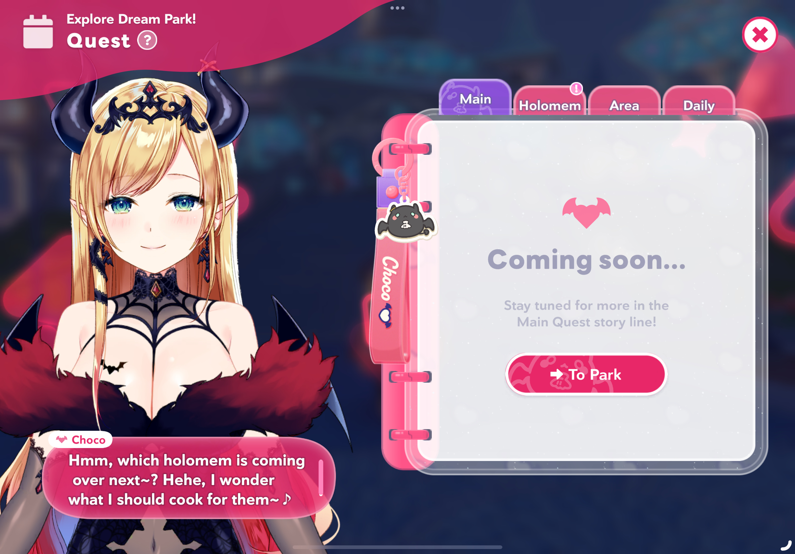
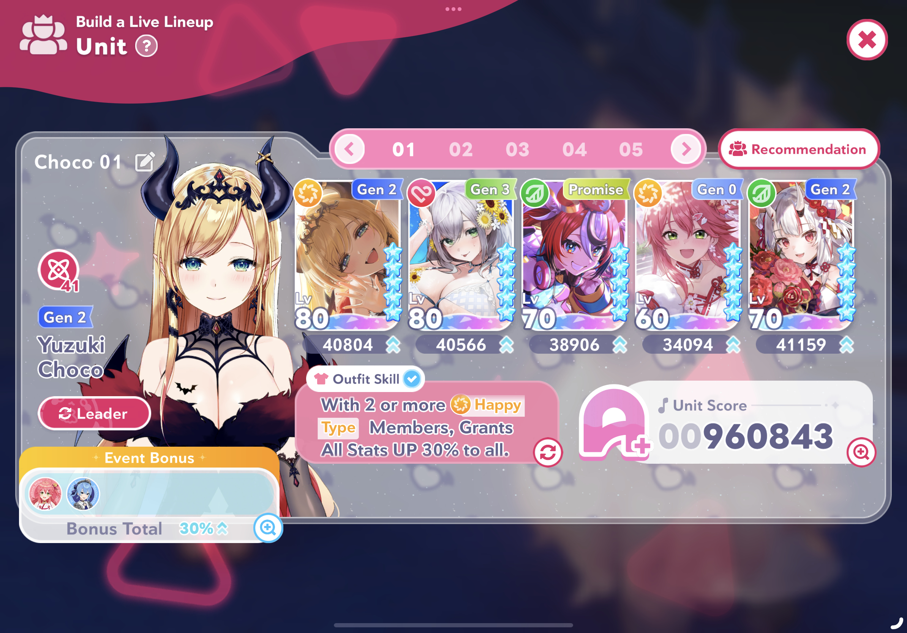
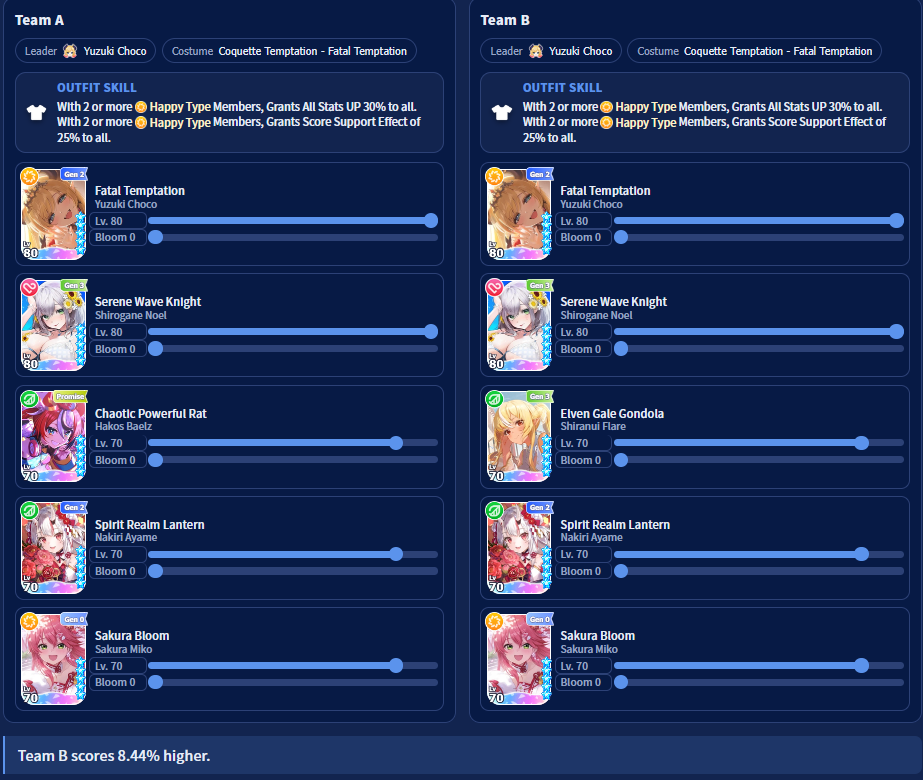
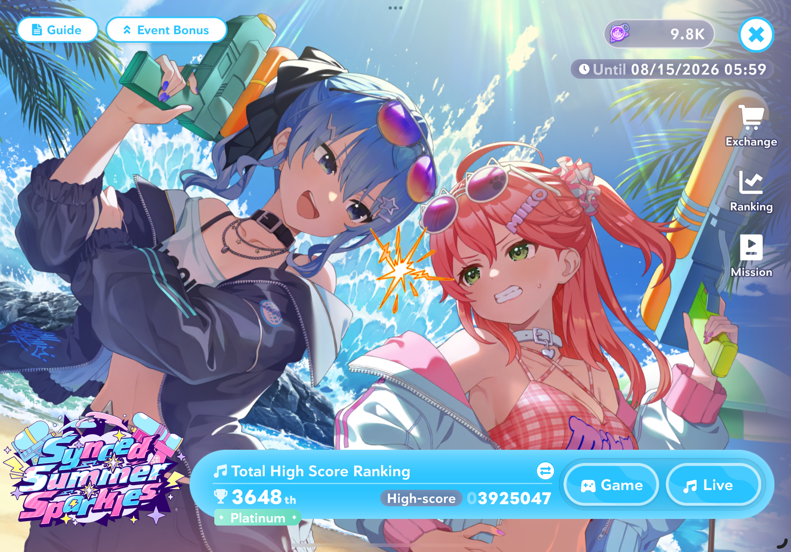
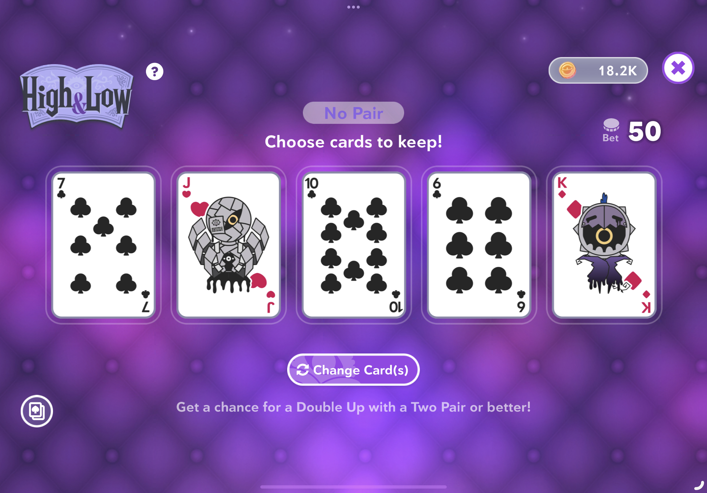
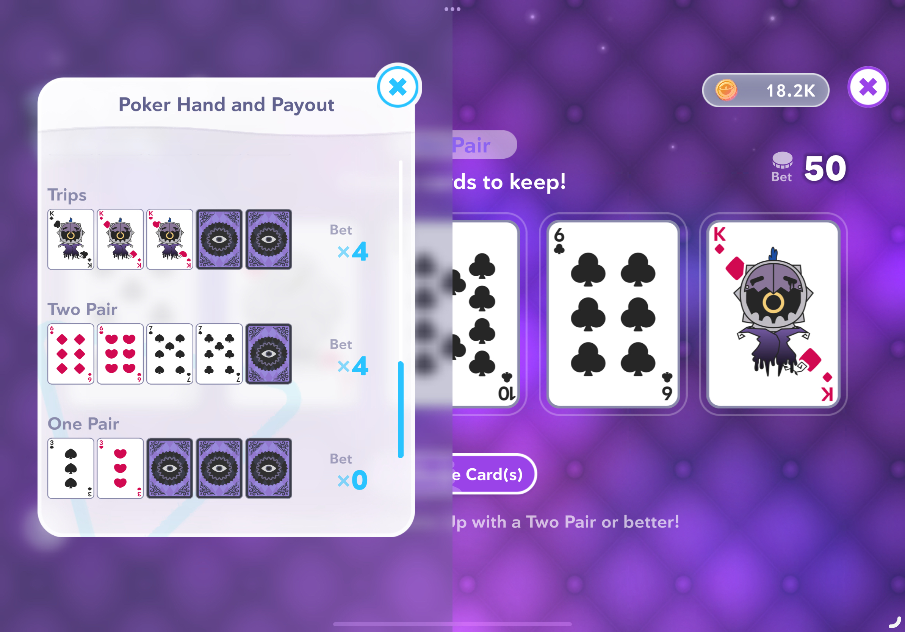
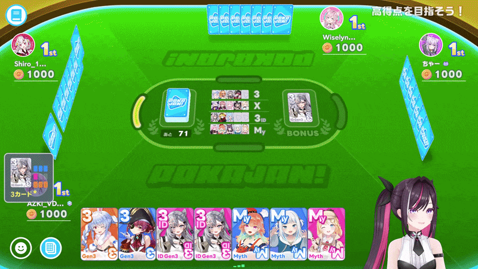
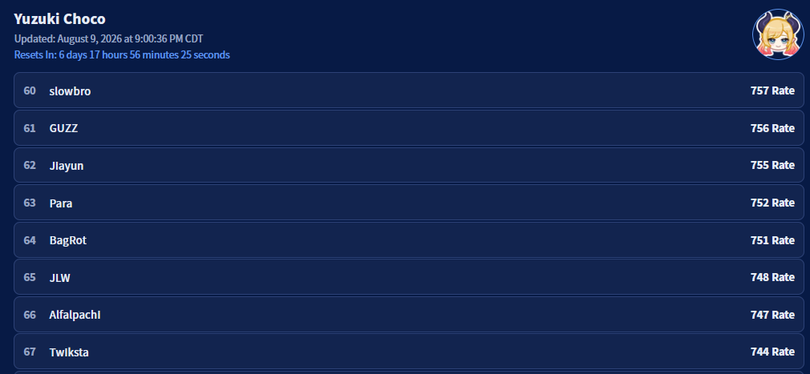

Gambling in Hololive Dreams

I’m caught up with the story now!
So while I did give a high level overview of some gambling activities in Cover’s new rhythm game Hololive Dreams (Holodori), I wasn’t far enough in the story to actually participate in these mini-games. A few days later and I’ve been able to get thoroughly obliterated in every possible game so let’s get started!!
While Genshin Impact wasn’t the first game to introduce gacha mechanics to the West, it certainly is the most well-known example. For those who don’t know, the primary way of acquiring new (and generally meta) units in your team involves trading premium currency for lottery tickets. Each lottery ticket has a set chance of acquiring each character with an inverse proportion to their strength. Due to the innate variability of a 1%-2% chance of getting the desired character, some games introduce a mechanic called pity which provides a hard cap on how unlucky a person can be (eg. the desired character always appears after 100 tickets). Since the focus isn’t solely focused on the gacha genre I’ll just provide a non-exhaustive list of other ways companies can incentivize more gambling:
So how can you introduce these gacha mechanics into a rhythm game? Well, Holodori doesn’t have to do anything new since this question was already answered in Project Sekai (Hatsune Miku: Colorful Stage). Specifically the player fields 5 units (the 1st being called the “Leader”) which each have abilities that can enhance a total score of the play, provide health to help struggling players, and convert inaccurate note hits into “Perfect” notes which maintains the combo streak.
Holodori builds upon that core system by adding elements, granular stats, and emphasis on the Leader role. which gives the developers a few more levers they can pull before introducing power creep. Elements are the simplest factor as they are broken down into “Cute”, “Calm”, and “Happy” types denoted by the Red Heart, Green Leaf, and Yellow Sun respectively. Then we have the stats of a character which are Performance, Sense, and Talent. Lastly we have the redesigned Leader role which is shifted from the first slot of a team into a dedicated position with their own powerscaling mechanics - Outfits and Skill Trees.
Elements serve no direct purpose to characters and are just labels for other effects to rely on as conditions (eg. activate when 2 Happy members are fielded). The 3 stats are a lot more direct as their sum represents a base member’s strength. In general a character leans into one of the 3 stats so % increases become much more effective on properly crafted teams (eg. a Talent-focused team enjoys a 130% Talent boost over a 150% Sense boost). Lastly, the Leader’s outfit and skill tree. Since the skill tree is a deterministic process I’ll focus on the outfit which serves as a team-wide passive buff. While the basic outfit gives a flat 15% All Stat bonus, 4* and 5* units unlock new unique outfits for their respective member - for example getting a 5* Yuzuki Choco unlocks a new Outfit which gives All Stat and Final Score bonuses if 2 Happy members are fielded.

My current team w/ Yuzuki Choco as the Leader
These 3 new avenues of power give developers pretty easy ways to incentivize the number munchers - introduce a new niche unit, powercreep an existing unit, or release a new outfit. Of course developers can introduce new characters which enhance existing units. An example of my team is Summer Noel which is heavily reliant on being fielded with another member from her generation (Pekora, Flare, Marine) and with my current roster this means Flare’s base 5* member becomes best-in-slot (replacing Hakos Baelz)

On the left is my current team and I'd gain 8% score just from using Flare (the right team)
Just to make sure players swipe for the latest and greatest units, gachas typically host limited time events which are tailored for the newest units. An easy example is Nikke whose raids always coincidentally get thrashed by the newest units (looking at the iron-weak core exposed CHUD being released alongside Summer Cindy).
In rhythm games this incentive is (mostly) pushed from direct powercreep to the event itself. Players will accumulate points from playing the game and the new units will provide a percent increase if they’re fielded (or just owned for the mini-games). Since these event rewards scale on score rank, players who want to reach the next tier get pressured into either obtaining the event units or playing more to compensate for the lack of bonuses. Of course if you don’t really care about the rewards then developers have to rely on new designs and character preferences to move the swiping needle.

The current event (which is a LOT less scandalous)
So let’s say you wanted to hit a high score for the current Holodori event (which is currently a mini-event that ranks based on your top scores on 3 songs). Unlike combat games, there isn’t a crit mechanic so instead each unit has a chance to activate their skills. If this sounds like it’ll lead to RNG fishing then you’re correct! I’ve personally seen my score fluctuate by over 10% just from skill activations and when a majority of the rankings are point based this variance is tilting. Luckily there’s tooling ready to optimize your team for specific maps but the fundamental issue will always remain.
Once you’ve finished Chapter 1 of Holodori’s story you’ll enter the GAMBLING ZONE where the main currency becomes poker chips and its economy is semi-isolated from the main world. In order to complete Chapter 2 you end up having to play all of the mini-games and obtain around ~30k poker chips which is either a trivial task or literally pulling teeth depending on your gamer skills.
From the Hololive Dreams website
So I think the mini-game is called something else but it’s basically a miniature version of Fall Guys where you run laps around an obstacle course and after the top half of participants finish their lap the next round starts. The gambling part comes in as a combination of your entry fee and your final ranking. With a base fee of 500 coins, you have to place 8/16 to gain any coins and 10/16 to not lose any. If you are cheeks at the game like me (bottom 4 gang) then you will frequently see those 500 coins disappear. If you’re feeling powerful then you can increase the entrance fee up to 2000 coins and just really hope to not place bottom 4 since the payout scales with your initial bet (eg. betting 4x means your gains/losses are also quadrupled).

From the Hololive Dreams website
After giving Shiori 7500 coins you open up another way of acquiring chips and it’s so consistent that there’s a 20k coin cap daily. If you want the TL;DR then it’s Video Poker with an additional doubling step afterwards. If you don’t know what Video Poker is then after paying the 50 coin entrance fee you are given a 5 card hand from the standard playing card deck (and 2 Jokers) and if you land a double-double/triple or better then you get 200 coins. From there you can enter the second phase of the mini-game which is a simple coin flip. Given a card from the deck you have to decide whether the next card will be higher or lower. If you win then your earnings double; lose and all of your winnings vanish.

High & Low winning chart - if I hit the 0x I lose 50 coins
Depending on which circles of Twitter you’re in, there’s a chance you’ve seen people talk about this mini-game and for good reason - it’s Mahjong Soul with even more Anime girls. The gameplay is quite a bit simpler but the same tactics apply - 4 players at the table, point-max by playing sets of tiles, game’s over when all tiles are gone or when a player goes bankrupt. Some things which make Pokajan different include a random bonus tile which is set at the start of a game and gives bonus points for each set made with that tile. If you’re curious on just how strong they are then here’s a clip of the shortest Pokajan game ever recorded:

This might be generational aura loss
Honestly this section should be longer but I am so bad at Pokajan that I stopped playing this mini-game after I did the required games needed to complete Chapter 2 of the story. But for the Mahjong heads it does seem to be the main attraction of the game since:
While the lobbies are popping off I am curious to see how they’ll alleviate the issue of dead mini-games as more are presumably going to be introduced. I personally think it’d be cool if instead of adding mini-games they replace existing mini-games in either a rotation system or a temporary coat of paint. Regardless I will keep playing and watch all of my gacha pulls get me nothing, all of my Pokajan games place me in 4th, and all of my skill activations magically disappear.

Gotta maintain my top 100 Choco ranking!!!